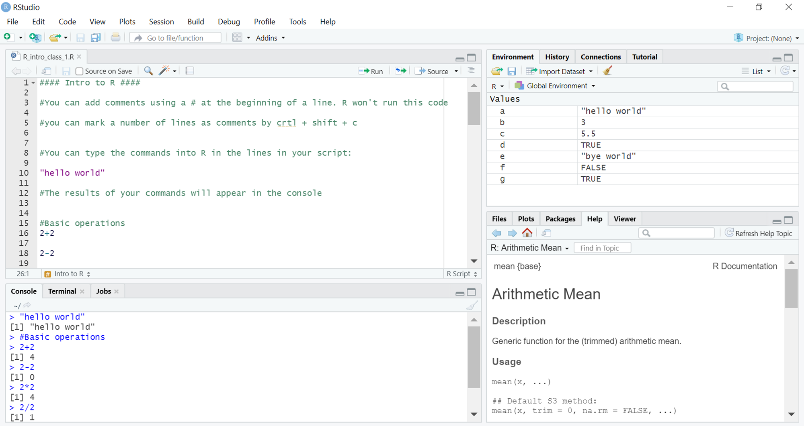
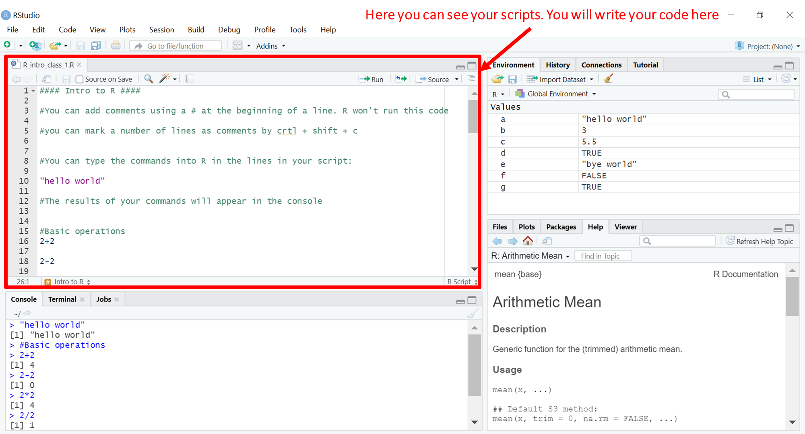
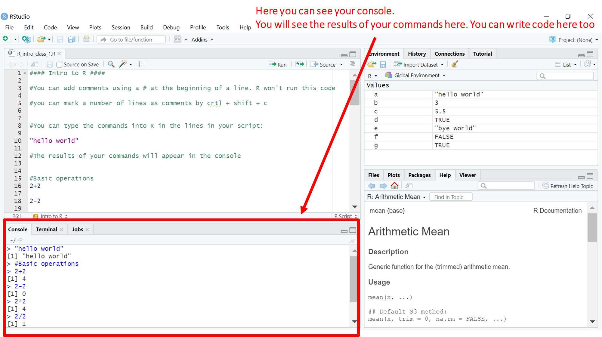
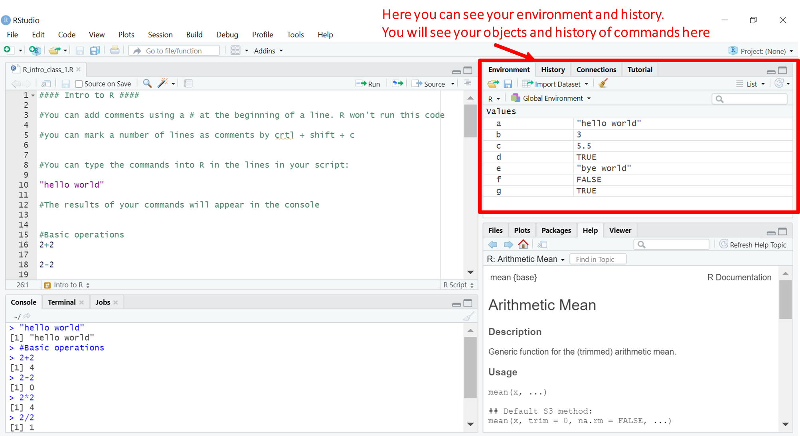
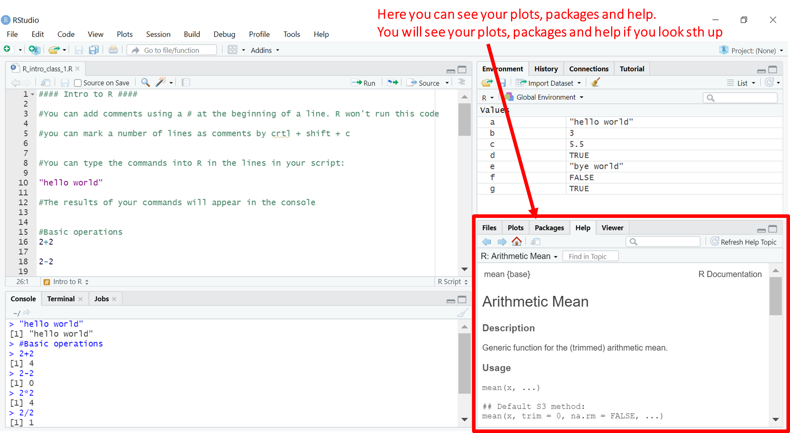

2 + 2[1] 4Michal_Wypych
This chapter introduces R and RStudio and shows you how to perform the most basic operations in R. We’ll go through the basics of what is R, how to navigate in the most common program for working with R called RStudio and we’ll also look into where to look for help when you might need it.
R is a programming language. It was designed in the 90s mainly with working with data in mind.
So why bother with R rather than stick to SPSS? There is a number of reasons:
Is open source and free! This becomes especially important when you leave academia and very often can’t work on proprietary software like SPSS.
Has a great community! The first point also makes it much easier for people to collaborate and create new things for R.
Is more reproducible! Yes, some proprietary software allows you to write code (like SPSS) but what good is that if you need to buy the software to run it?
Is more flexible than SPSS. There is generally more things you can do in R and you can customize the code so that it does exactly what you need. Don’t like the defaultsettings? You can change them! If you need to you can just write your own functions to calculate just what you need.
More things are being developed in R. Generally more newer stuff is developed in R before it reaches e.g. SPSS.
Is much faster. Once you start working with large datasets and computation heavy analyses you will need things to run fast. R is pretty good with it (although for some really large things it won’t do and you might want to switch to other programming languages like C++).
You can download R from here.
While R is a programming language RStudio is an IDE (Integrated Development Environment). Basically, it’s purpose is to make working in R easier and more reproducible. You can download RStudio from here.
When you open RStudio you might see something like this:

We’ll go through each pane one by one and see what they are used for.

The first pane is where your R scripts are displayed. This is the place where you will most commonly write your code. Scripts are files that contain your code and can be saved.

Second pane is where the console is. That’s where the results of your analyses will appear. You can also write code in the console but you can’t easily save it. Writing code in the console is best if you need to check something quickly and you don’t need it saved. However, it’s best to write the code in the script because then you have all your steps saved and can easily retrace them.

Third pane contains a few tabs. The most important for us is the Environment tab. This will by default show the global environment - a place where all the objects that you create in your script are stored (e.g. datasets that you load, results of analyses, plots, etc.). The other tabs show the history (so all the functions you ran), connections to databases and allow access to simple tutorials in R.

Fourth pane again contains a few tabs. It’s mainly used for viewing various things that are results of your code. The plots that you create will be displayed here, as well as some other visualizations like tables, maps etc. (the latter two in the Viewer tab). If you look up help for a function (you’ll see in a second how to do that) the documentation for that function will also show up here. You can also view which files are available in your current directory (the place where R will try to look for or save files by default) and the list of available packages.
Working in R, especially in the beginning, might be quite overwhelming. Fortunately there is plenty of places where you can look for help. It’s fairly common to look for help.
Looking up help
Built-in help: you can check the documentation of a function in R by calling ?function_name. The documentation of the function will appear in the help tab. It should contain the basic information on the function: what it does, how it should be called, what arguments the function accepts. It can also contain more detailed information like what is the result of a given function or some examples of how to use it.
CRAN: short for Comprehensive R Archive Network. You can download the newest version of R from CRAN. It’s also the place where many R packages are stored and can be downloaded from. Documentation of packages can be found there as well. You can visit its website here.
Books: there is plenty of great books on R that cover a range of various topics, many of them are available for free on the web. Books allow you to get a much more detailed account of various things you can do in R, they are also often written by people who developed specific packages for doing the things described in the books.
The Internet: R community is generally very welcoming and helpful and there is plenty of places where you can look for help on the web, from social media like Twitter to common forums like StackOverflow. One thing to keep in mind about answers from the web is that they do not constitute the ‘official’ solutions so they might be wrong - it’s often a good idea to double check or be sure that you understand the solution proposed by someone on a forum.
Now that we know how the basic interface for working in R looks like and where to look for help if we need it, we can move on to making basic operations in R. As you could see, there are 2 places where we can write code: the console or in the scripts. If you type a command in the console you can run it by pressing enter. In order to run a command from the script go to the line where your command is or highlight it and press ctrl + enter.
If you’re feeling like using a very fancy calculator you can turn R into one. All the basic mathematical operations work in the same way. So e.g.
Other operations work in a similar way. Raising to a power can be achievied with ^:
Ok, so we know we can use R as a calculator. However, that is not very useful.
When analyzing something or writing a program you will probably encounter a number of different types of values. Above you saw one of them: numeric values. These can store numbers with values after the decimal point.. The other types are:
integer: it stores numbers without decimal point. They can be created by putting capital l after the number e.g. 3L.
string: this type refers to to text values. Text is created using quotation marks e.g. ‘this is text’
boolean/logical: this type refers to logical values: TRUE or FALSE
These types form a certain hierarchy: some of them can be converted to other but not the other way around. The reason why this is important is that if R encounters more than one type of value in one operation it will often try to convert the types so that they match. It will do so in a way to create the highest matching type. The hierarchy goes in this way: boolean -> integer -> numeric -> string. All the types can be converted to text but not the other way around. Boolean values are converted so that TRUE = 1 and FALSE = 0. o e.g. if you try to add boolean and numeric value, R will convert the boolean to numeric.
Some operations can’t be performed on certain types of values, e.g. you can’t multiply two strings. If R encoutners two types it can’t work with it will throw an error.
Error in 6 * "this is gonna throw an error": argument nieliczbowy przekazany do operatora dwuargumentowegoWhoops, we got our first error. An error means that R was not able to execute your command and stopped. You won’t get results of the operation if you get an error (which is different from getting a warning! A warning means that something happened that R wants to tell you about: e.g. it encountered something unusual and had to deal with it in a certain way. Warnings will start with the word Warning. Sometimes it may be a bit confusing because depending on you color settings errors and warnings may be displayed in the same color and it can be a bit scary in the beginning if you get flashing red letter saying something went wrong).
Generally an error message will tell you 2 things:
6 * 'this is gonna throw an error' line)non-numeric argument to binary operator which just means we used something that is not a number in an operation that requires numbers).How exactly an error message is structured largely depends on how well the functions were prepared. If the functions you use are well documented then the error messages should be pretty clear and understandable (which unfortunately is not always the case. This is another reason to document functions well when you start writing your own functions. Be nice to people who start using them!).